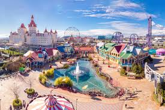
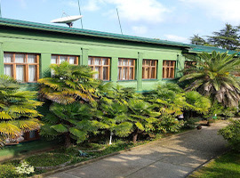
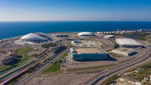
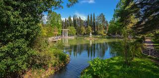

Добро пожаловать в Сочи — один из самых красивых и популярных курортных городов России! Здесь вас ждут живописные пейзажи, богатая история и множество уникальных достопримечательностей. В нашем путеводителе вы найдете информацию о самых интересных местах, которые стоит посетить, чтобы полностью окунуться в атмосферу этого удивительного города
Парк появился ещё в 1898 году усилиями предпринимателя В. Хлудова и до революции назывался Хлудовским. Во все времена он был любимым местом встреч горожан и приезжих. «Ривьера» радует разнообразной тропической зеленью: на территории площадью 14,7 га растут агавы, сакуры, платаны, пальмы, кипарисы и другие растения. На Аллее космонавтов цветут магнолии, посаженные известными русскими и американскими покорителями космоса. В «Ривьере» туристы могут сходить, чтоб покататься на различных аттракционах, посетить океанариум и дельфинарий, сфотографироваться с забавными контактными скульптурами и символом парка — композицией «Жемчужина с часами».
Один из лучших в России и СНГ тематических парков расположен недалеко от Олимпийского парка. Взрослых и детей здесь ждет множество аттракционов разной степени экстремальности, дельфинарий, совариум, дино-клуб, игровые площадки и многое другое. Для гостей проводятся аква-шоу, мастер-классы, анимационные программы. Доступ ко всем развлечениям — по единому входному билету.
Как известно, у Сталина было порядка двадцати дач. На этой он бывал каждый год с августа по октября — приезжал дышать свежим воздухом и лечиться мацестинской минеральной водой. Особняк зеленого цвета построен в 1930-х годах специально для отца народов. Сегодня это один из корпусов действующего санатория «Зеленая роща». Посетители могут посмотреть то, как жил и отдыхал Сталин: личный кабинет, бильярдную, зал, бассейн.
Объекты, построенные к Олимпиаде-2014, находятся в Имеретинской низменности в Адлерском районе Сочи. Сюда приходят, чтобы погулять, покататься на велосипедах и роликах, посмотреть на шоу светомузыкальных фонтанов и сфотографироваться. На территории парка находится «Сочи автодром» и музей автомобилей. В сами олимпийские объекты можно попасть, если купить билет на какое-то событие: спортивный матч, концерт, ледовое шоу и т.д.
Дендрарий — живая энциклопедия субтропической флоры со всего мира. На территории 46 га собрано 1800 видов растений разных регионов мира. Парк делится на верхний и нижний, они расположены по обе стороны Курортного проспекта. В верхнем парке представлена флора разных уголков планеты. В вольерах можно посмотреть на павлинов, попугаев и страусов. В нижнем парке приятно отдохнуть у прудов, в которых обитают утки, пеликаны и лебеди. Между верхним и нижним парками работает фуникулер, правда, за катание придется доплатить. В центре дендрария находится вилла «Надежда», здесь проходят концерты и выставки.
